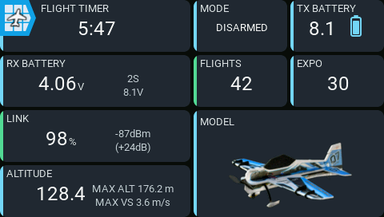
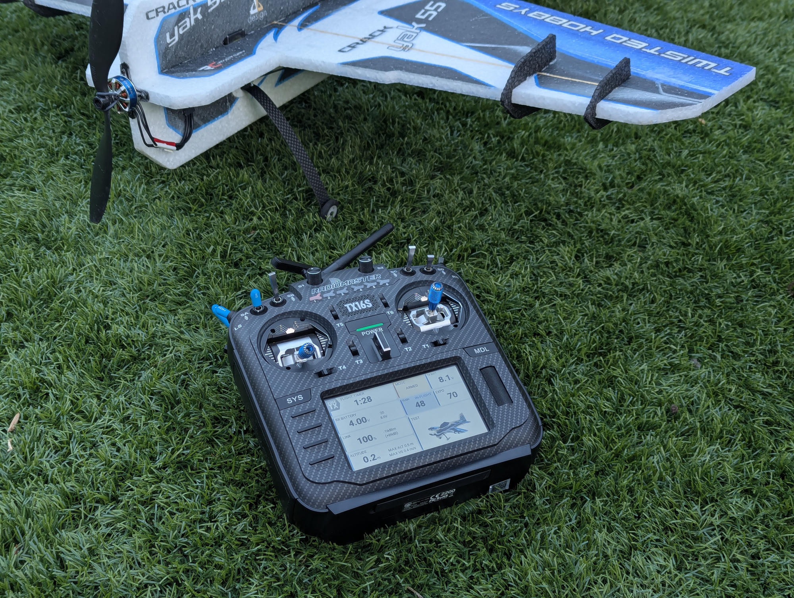
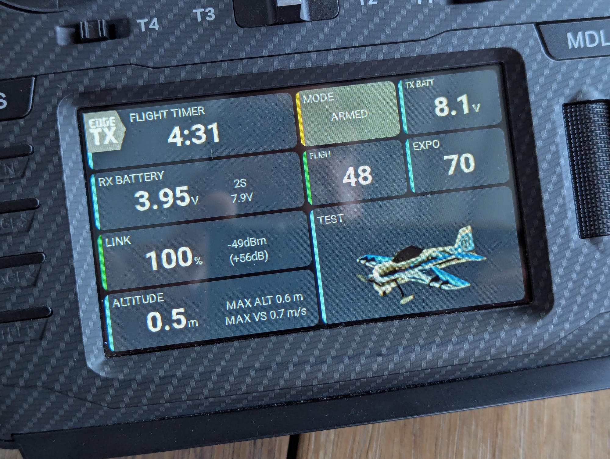
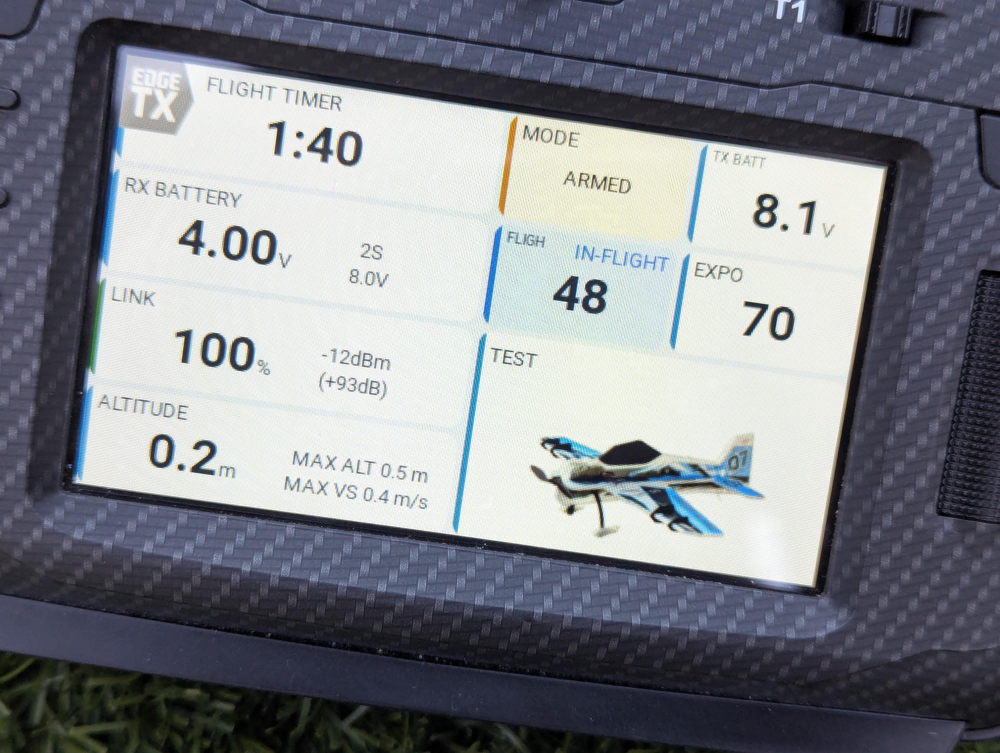

AeroGrid
AeroGrid is a configurable 4 x 4 glass-cockpit dashboard for EdgeTX color radios. YAML layouts combine telemetry, model timers, flight tracking, switch states, trim positions, and model images in responsive panels.
Use Documentation version in the header to match your installed release. main (unreleased) describes the development version.
Install or upgrade AeroGrid
Connect your radio and follow the guide to put AeroGrid on its SD card.
Open Install / UpgradeChoose a guide

The complete Default layout at native 480 x 272 resolution, captured in the EdgeTX TX16S simulator using the production Modern Dark theme. Telemetry, transmitter voltage, and switch positions are sample inputs; the timer and global variables use isolated firmware model settings.






Why AeroGrid?
EdgeTX is an excellent foundation: open source, remarkably configurable, and flexible enough to support a wide range of radios and aircraft. AeroGrid builds on those strengths rather than replacing them.
The dashboard experience has not always matched that flexibility. Many widgets have a dated appearance, and mixing widgets from different authors often means mixing different fonts, colors, spacing, and alarm styles. Individually useful widgets do not necessarily add up to a coherent interface.
Earlier graphics APIs made polished, consistent interfaces harder to build. With LVGL, EdgeTX now offers a more flexible foundation for a shared UI design system. Projects such as Kyle Stacy's KSE Dashboards for Rotorflight helicopters show what focused dashboards can offer. For fixed-wing pilots, however, options for a modern, cohesive dashboard that can be freely rearranged remain limited.
AeroGrid's goal is to provide flexible, configurable, modern-looking dashboards and panels, with a consistent visual language throughout. Choose the information that matters to your model, arrange it in a YAML-defined grid, and keep the same typography, spacing, colors, and state indicators across the dashboard.
How to use
Follow these three short walkthroughs to install AeroGrid, create a dashboard, and customize it.